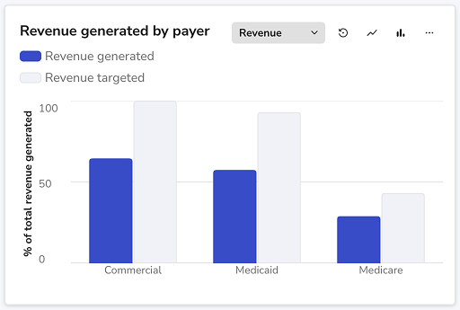

BarChart
What this chart is for
Use a bar chart when the reader needs to compare items, rank categories, or scan differences quickly. It is the safest default for categorical comparison because length on a common baseline is easy to judge.
How readers decode it
Readers compare bar length first, then category labels, then exact values. Order and baseline matter more than decorative styling.

Use when
- Rank categories from high to low
- Compare teams, regions, products, cohorts, or modules
- Show grouped values across the same categories
- Show total plus composition with stacked bars
Avoid when
- Time-series movement where shape matters
- Part-to-whole stories with only a few pieces
- More than 6 visible category colors
- Non-zero baselines that visually exaggerate small differences
Variants
Pick the version that matches the question
Variant
Use it for
Design note
Single series
Best default for one metric across categories.
Sort intentionally: highest first, lowest first, or product-defined order.
Grouped bars
Use when each category has two or three comparable series.
Avoid beyond three series; scanning becomes slow.
Stacked bars
Use when the total and broad composition both matter.
Only the first segment has a shared baseline. Do not use it for precise segment comparison.
Horizontal bars
Use for long category names or rankings.
Prefer this before rotating labels.
Distribution bars
Use for percentage bands that form a full bar.
Confirm the segments add to 100%.
Anatomy
Parts designers should understand
Part
What it does
Designer responsibility
Category axis
Names what is being compared.
Keep labels short and meaningful.
Value axis
Defines the common scale.
Start at zero unless the exception is explicitly labeled.
Bar mark
Encodes value by length.
Keep width, gap, and radius consistent.
Legend
Explains grouped or stacked series.
Do not force users to decode too many colors.
Hover card
Reveals exact values.
The chart should remain understandable before hover.
Questions before designing
- What is the comparison unit?
- Should the order be ranked or product-defined?
- How many series are truly needed?
- Do exact values need to be visible or can they live in hover?
Natural product use cases
- Top regions by completed tasks
- Plan comparison by member count
- Tickets by priority
- Product modules ranked by adoption
Common mistakes
What makes this chart misleading
Issue
Why it matters
How to handle it
Watch-out 1
Leaving bars unsorted when the task is ranking
Resolve it before polishing the visual.
Watch-out 2
Using stacked bars for precise segment comparison
Resolve it before polishing the visual.
Watch-out 3
Using too many colors in a simple comparison
Resolve it before polishing the visual.
Watch-out 4
Using a non-zero baseline without making it obvious
Resolve it before polishing the visual.
Accessibility checks
- Do not rely on color alone for meaning.
- Write a useful title and description for handoff.
- Keep the chart understandable before hover.
- Use table fallback where precision matters.
State guidance
For empty states, explain which category data is missing. Skeleton bars should preserve the expected chart footprint while loading.